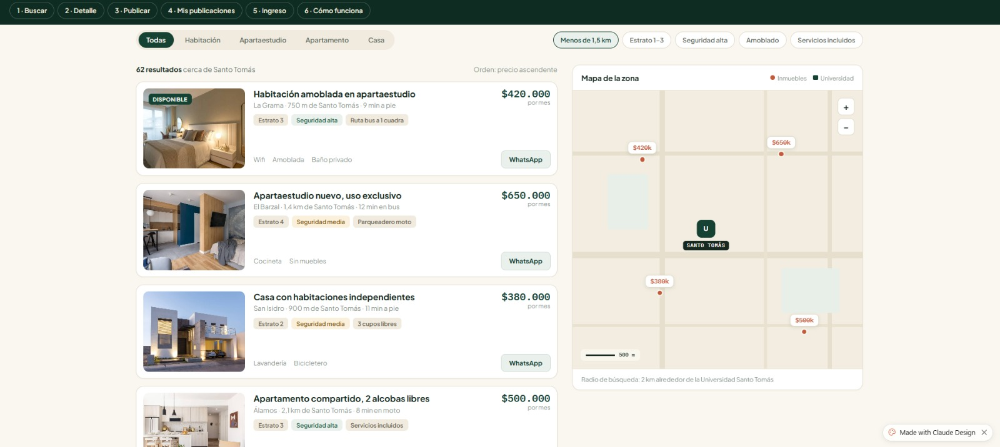
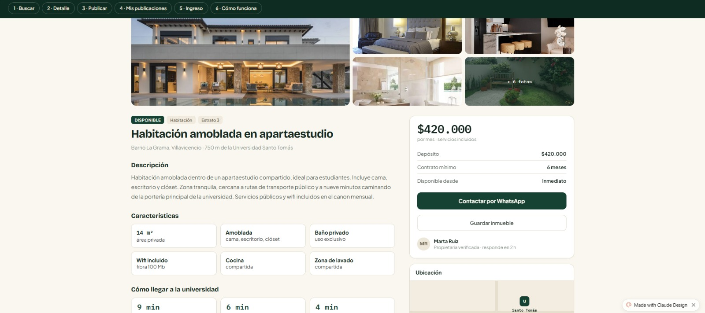
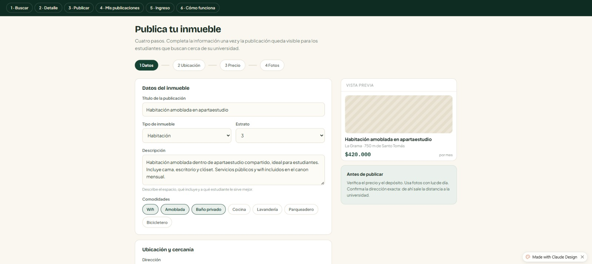

Buscar
Encuentra viviendas y utiliza filtros por precio, ubicación, tipo de vivienda y distancia a la universidad.

Roumix
Roumix centraliza opciones de habitaciones, apartaestudios, apartamentos y casas en renta para la comunidad universitaria de Villavicencio. Busca, filtra y compara opciones de vivienda en un solo lugar.
Los estudiantes que llegan a Villavicencio desde otras ciudades y municipios pueden tener dificultades para encontrar rápidamente una vivienda cercana, segura y adecuada a su presupuesto.
Actualmente, la información sobre habitaciones, apartaestudios, apartamentos y casas en renta se encuentra dispersa en redes sociales, avisos físicos y recomendaciones informales.
Esta situación genera pérdida de tiempo, incertidumbre y, en algunos casos, expone a los estudiantes a ofertas poco confiables o a arrendamientos que no se ajustan a sus necesidades y presupuesto.
Encuentra viviendas y utiliza filtros por precio, ubicación, tipo de vivienda y distancia a la universidad.

Consulta el precio, características, imágenes, ubicación y demás información de una vivienda.

Los propietarios pueden publicar sus viviendas indicando sus características, precio, ubicación e imágenes.

En Roumix puedes encontrar habitaciones, apartaestudios, apartamentos y casas disponibles para renta.
Sí. Roumix permite buscar y filtrar inmuebles según su ubicación y distancia respecto a una universidad.
Puedes consultar información como precio, descripción, características, estrato, imágenes y ubicación.
Desde la publicación del inmueble podrás contactar al propietario mediante WhatsApp.
| Integrante | Rol | Responsabilidad |
|---|---|---|
| Danna Camila Pineda Lopez | Integrante del proyecto | Participación en el diseño y construcción de la solución. |
| Christian Felipe Pérez Hincapié | Integrante del proyecto | Participación en el desarrollo y documentación de la solución. |
Déjanos tus datos para conocer tu interés en la plataforma y el tipo de vivienda que buscas.